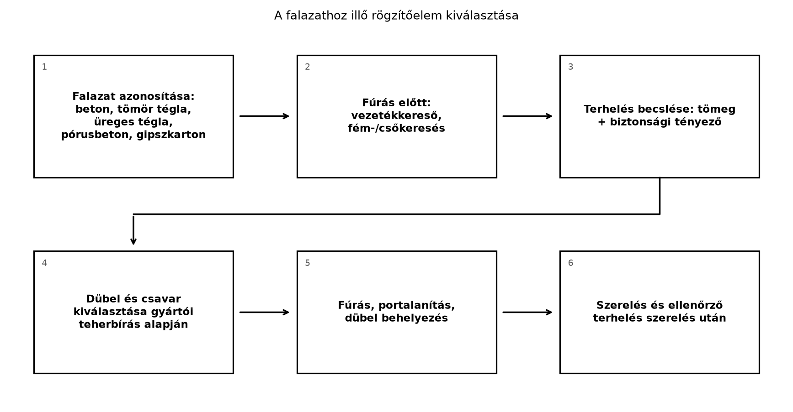

Egy felső konyhaszekrény nem eshet le, és egy konzolos polc sem fordulhat ki a falból. A rögzítés akkor lesz biztonságos, ha ismered a fal anyagát, a dübel és a csavar működését, a teherbírási adatokat, és betartod a fúrás és szerelés sorrendjét.
Képzeld el, hogy a megrendelő konyhájában egy 36 kg-os, edényekkel megrakott felső szekrényt akasztunk fel. A fal tömör tégla, de látszólag kétséges, hogy a két kis fémakasztó megtartja-e. A fúrás előtt meg kell tudnod mondani: hány rögzítési pont kell, milyen mélységben, milyen dübel és csavar, és mi a teendő, ha a fúró hirtelen üreget talál. Ezt tanítja ez az alfejezet.
A fal anyaga meghatározza, milyen rögzítőelem dolgozik benne. A leggyakoribb alapanyagok:
Definíció. A rögzítéstechnika az asztalosipari termék és az épületszerkezet (fal, padló, mennyezet) megbízható, oldható vagy nem oldható összekapcsolása. A rögzítés elemei: alapanyag (a tartó szerkezet), rögzítőelem (dübel, csavar, horgony, ragasztó), és beépítési körülmény (furatmélység, él- és tengelytávolság, hőmérséklet, nedvesség).
Összefüggés. A rögzítés akkor megfelelő, ha a megengedett teherbírás nagyobb, mint a tényleges igénybevétel, és a biztonsági tényező is beépült. A gyártói teherbírási táblázatok a megengedett értéket már tartalmazzák; a táblázatok feltételeit (furatátmérő, mélység, alapanyag) pontosan be kell tartani.
Megjegyzés. A fal típusát a helyszíni felméréskor jegyezzük fel. A Helyszíni felmérés, vázlatrajz és építőipari rajzok olvasása alfejezetben rögzített vázlat és fotók pontosan megmutatják, hol fut cső, vezeték, hézag vagy elváltozás. A rögzítési pontokat erre a vázlatra rajzoljuk, és csak ezután fúrunk.
A leggyakoribb rögzítőelemek:
Szabály. A dübel és a csavar átmérőjét, a furatmélységet, a csavarhosszt és a meghúzási nyomatékot mindig a gyártói adatlap adja meg. A megadott él- és tengelytávolságok be nem tartása a fal megrepedését vagy a dübel kiszakadását okozza. A csavar hossza legalább a dübel hossza plusz a rögzítendő elem vastagsága, de nem érhet túl messzire a falban rejlő cső vagy vezeték.
Az ábra a hat rögzítőelemet falmetszetben, a fenti felsorolás sorrendjében mutatja: a szétfeszülő műanyag és fém dübelt tömör falban, a tokon át a falba érő keretdübelt, a gipszkarton mögött szétnyíló dübelt, a nagy felfekvésű pórusbeton dübelt és a gyantába ágyazott menetes szárat. Mindegyiknél a furat mélyebb a dübelnél; üreges téglában, gipszkartonban és pórusbetonban ütés nélkül fúrunk (ellenőrizendő: dübelgyártói útmutató).
A rögzítőelemeket húzóerő (a falból kifelé húzó erő) és nyíróerő (a falfelülettel párhuzamosan csúsztató erő) terheli. A kettőt együtt is ki kell bírnia a dübelnek.
Definíció. A biztonsági tényező () az a szorzó, amellyel a várható legnagyobb üzemi terhelést megszorozzuk, hogy a becslési bizonytalanságot, a dinamikus hatásokat és az anyagminőség szórását lefedjük. A gyártói megengedett teherbírás általában már tartalmazza a szükséges biztonságot; a törőteher és a megengedett teher aránya a gyártói dokumentációban ellenőrizhető. A gyakorlatban 3–5-szörös arány is előfordul (ellenőrizendő: gyártói adat).
Számítás. Egy konzolos polcot két tartókonzollal rögzítünk. A polcra helyezett tömeg , a súlyerő . A polc mélysége , a konzol felső és alsó rögzítőcsavarja közötti függőleges távolság . A felső csavart kihúzó erő az alsó csavar körüli nyomatékból becsülhető:
Mivel két konzol van, egy-egy felső rögzítőpontra jó közelítéssel ennek fele, kb. 204 N húzóerő juthat. Ha a dübel megengedett húzóterhelése tömör téglában 0,4 kN (ellenőrizendő: gyártói táblázat), a becslés a biztonsági sávon belül van. A nyíróerő összesen 196 N, azaz pontonként kb. 98 N, ami szintén a megengedett alatt marad, ha a dübel adataiban a nyíróterhelés legalább 0,2 kN (ellenőrizendő).
Az ábra ugyanezt a nyomatéki egyensúlyt mutatja: a polc végén ható súlyerő az alsó csavar körül forgat, ezért a felső csavart a falból kifelé húzó erő terheli (). Minél mélyebb a polc és minél kisebb a csavarok távolsága, annál nagyobb a kihúzó erő.
Számítás. Egy felső konyhaszekrény tömege üresen 45 kg, a betöltött edényekkel együtt , a súlyerő . A szekrény mélysége , a súlypont a faltól kb. . Az akasztóvasalat felső beakasztási pontja és az alsó, falhoz ütköző ütköző közötti távolság . A teljes kihúzó erő:
Ha négy rögzítőpontot használunk, egy pontra kb. 169 N húzóerő és kb. 184 N nyíróerő jut. Ez a tömör téglába helyezett, megfelelő méretű műanyag vagy fém dübel tipikus megengedett tartományában lehet (a pontos érték a gyártói táblázatban, az adott falazathoz rendelve – ellenőrizendő). Figyelem. A felső szekrényeknél a megrendelő sokszor a szekrény aljára támaszkodik vagy a szélére akaszt; ezért a becsült terhelésbe legalább 30 kg edénytömeget érdemes felvenni, és nem szabad csak az üres tömeget nézni.
A felső szekrényt nem egyszerűen az oldallapján át a falba dugott csavarokkal rögzítjük, hanem akasztóvasalattal. Az akasztóvasalat két részből áll: a szekrény hátoldalán, rejtetten elhelyezett akasztóelem, és a falra szerelt fali sín vagy kampós elem. A beállító csavarokkal a szekrény oldalirányban és mélységben, valamint a magasságban finoman szabályozható. A szerelés sorrendje:
A felső szekrényeknél a gyártói adatlap közli, mekkora megengedett terhelést ad az akasztóvasalat, és hány ponton kell a sínt a falba rögzíteni.

A falban villanyvezeték, vízcső, fűtéscső vagy gázcső futhat. A fúrás előtt mindig kockázat-felismerést végzünk.
Tilos a dugaszolóaljzatok, kapcsolók, elosztók függőleges és vízszintes tengelyvonalában, valamint a szerelési sávokban fúrni. A vezetékkereső csak kiegészítő eszköz: a feszültségmentes vezetéket és a műanyag csövet nem mindig jelzi (ellenőrizendő: a szerelési sávok szélessége, MSZ HD 60364 vonatkozó része). A hagyományos „majd csak elkerüljük” módszer életveszélyes, mert a fúró a fázisvezetővel érintkezve áramütést, a csővel érintkezve pedig vízkárt, gázszivárgást okozhat. A konkrét szerelési magasságban mindig a helyszíni felmérés és a műszeres keresés adatai a mérvadóak.
Ha a fúró vezetéket vagy csövet ér: engedd el a gépet, ne nyúlj a fúrószárhoz, kapcsoltasd le az áramkört, és hívj villanyszerelőt; vízcső esetén zárasd el a vizet; gázszagnál hagyd el a helyiséget, és értesítsd a gázszolgáltatót.
Egy magas könyvespolc, gardrób vagy magas szekrény borulását a nyitott ajtó vagy fiók, a rá, illetve elé helyezett tárgy és a gyerek mászás is okozhatja. A borulás elleni rögzítés nem teherviselő felfüggesztés, hanem a bútor felső részét a falhoz kapcsoló, a billenést megakadályozó elem.
A legegyszerűbb megoldás egy billenésgátló szalag vagy L alakú fém sarokelem. A bútor felső hátoldalán, a korpusz merev részén rögzítjük, a másik végét a falba dübellel. A rögzítő elemet úgy kell beállítani, hogy a szalag vagy a furat hagyjon némi mozgást, de a borulás határán felfeküdjön. Az L-elem csavarjait a bútorban csak akkor húzzuk meg, ha az anyag megengedi (a forgácslapnál a csavar ne szakadjon ki), és a falcsavart a falazatnak megfelelő dübelbe tesszük.
Az ábra a borulás mechanizmusát (teher a nyitott fiókon, billenőpont az elülső alsó élen) és a rögzítés helyes, illetve hibás módját mutatja: helyes a korpusz merev felső részén fogó billenésgátló elem, hibás a rögzítés nélküli szekrény és a vékony hátfalba csavarozott elem.
Szabály. A borulásgátló a bútort a falhoz rögzíti, de nem helyettesíti a felső szekrény akasztóvasalatát, és nem teherhordó konzol. A kettő feladata különböző: az akasztóvasalat a súlyerőt viszi át a falra, a billenésgátló a nyomatékot és a véletlen húzóerőt korlátozza. A gyártói adatlap közli, mekkora húzóerőre méretezték (ellenőrizendő).
Padló. Padlóba fúrás előtt a padlófűtés csöveit meg kell keresni: a tervdokumentáció vagy hőkamerás felvétel alapján jelöljük a csövek nyomvonalát, és a furatot attól távol, a gyártó szerinti furatmélységgel készítjük (ellenőrizendő: a padlóépítő előírása, a fűtéscső fedése). A födém típusát (monolit vasbeton, előregyártott üreges vagy feszített födém) azonosítani kell; előfeszített födémbe, bordába nem szabad fúrni a tervező, statikus hozzájárulása nélkül (ellenőrizendő).
Mennyezet. A mennyezetről függő vagy oda rögzített elem a rögzítőre tartósan húzóerőt visz; ezért csak a mennyezeti (húzásra engedélyezett) fém rögzítőelem használható, műanyag dübel nem (ellenőrizendő: gyártói ETA és a teherbírási tábla). Fej feletti fúrásnál védőszemüveg és porelszívós fúrófej kell, a por és a törmelék a szembe esik; stabil, billenésmentes fellépőt vagy állványt használj, létrán állva ne fúrj. A fúrás előtt itt is vezetékkeresővel és a tervvel ellenőrzünk (villanyvezeték, csővezeték, födémbordák).
Szabvány. A falba, betonba szerelt rögzítőelemek műszaki alkalmasságát a faipari termék beépítésekor a rögzítőelem gyártójának teljesítménynyilatkozata vagy európai műszaki értékelése (ETA) igazolja. A teherbírási adatok a megadott falazatra, furatátmérőre, furatmélységre, él- és tengelytávolságra, valamint a csavar típusára érvényesek. A beépítés után a rögzítőelem nem ellenőrizhető, ezért a szerelés közbeni beállítások és a felhasznált termékek azonosítóit rögzíteni kell a munkalapon (ellenőrizendő: hatályos ETA, gyártói beépítési útmutató). Az épületasztalos-ipari rögzítéseknél, például ajtótok vagy ablak beépítésénél, a beépítési csomópontra vonatkozó építőipari előírásokat is figyelembe kell venni (ellenőrizendő: vonatkozó építési termék szabályozás).
Technológiai lap: felső konyhaszekrény rögzítése tömör téglafalba
Cél: 1000 mm × 330 mm × 700 mm méretű felső konyhaszekrény biztonságos felfüggesztése akasztósínnel.
Anyagok: felső szekrény, gyártói akasztóvasalat és fali sín, a falazathoz illő dübel és csavar (pl. 10 mm-es műanyag vagy fém dübel, a gyártó táblázata szerint – ellenőrizendő), falcsavar.
Szerszámok és gépek: lézeres szintező vagy vízmérték, mérőszalag, ceruza, vezetékkereső, fúrógép, fúrószár a dübelhez, mélységütköző, ütvefúró a tömör téglához és betonhoz (üreges téglában és pórusbetonban ütésmentes fúró üzemmód), csavarhúzó, nyomatékkulcs vagy nyomatékbeállítós csavarozó, porszívó, védőszemüveg, FFP2 légzésvédő (ellenőrizendő: védőeszköz-osztály).
Gépbiztonság. A kézi fúrógépet betanított, felügyelt tanuló kezelheti; védőberendezés nélkül, egyedül, fáradtan ne végezd. Használj védőszemüveget és porvédő maszkot; rögzítsd a munkadarabot, a fúrógép fogantyúját két kézzel fogd. A fúrószár csak feszültségmentes, megállt és kihűlt állapotban cserélhető.
Indítás előtti ellenőrzés: a fúrógép kábele és csatlakozója ép; a fúrószár éles, a tokmány rögzített; a mélységütköző beállítása a dübel hosszának megfelel; a fúrási pont vezetékkeresővel vizsgált; a munkaterület szabad; a vészleállító vagy a fúrógép kapcsolója elérhető.
Lépések:
A kész rögzítést a szerelés után kézi erővel és szemrevételezéssel ellenőrizzük. A dübel nem mozdulhat, a sín nem hajolhat, a szekrény nem billenhet. A felső szekrényt fokozatosan terheljük: először kézzel, majd kisebb súllyal, végül a gyártói megengedett terhelés egy részével. A beállító csavarokon nincs repedés, a csavarfej nem süllyedt be a falemezbe. A fúrt minta és a fúrópor is árulkodó: a tömör tégla furatpora vöröses, a betonpor szürke, a gipszkarton fehér.
Hiba. Ha a fúró a téglafalban váratlanul üreget talál, a sima műanyag dübel nem tarthat meg. Ilyenkor a furatot ki kell tisztítani, a fúrási pontot a gyártói minimális él- és tengelytávolság betartásával, lehetőleg a téglatestbe kell helyezni, és üreges falhoz való dübelt vagy hosszabb, jobban felfekvő elemet kell választani. A dübel nem toldható meg, a túl nagy furatba nem szabad ragasztópisztolyragasztót nyomni, mert az nem szerkezeti ragasztó.
Egy konyhabútor-szerelő a felső szekrényt tömör téglafalba akasztotta, de a szekrény két hét után elvált a faltól. A hiba okát keresve kiderült, hogy a fúrás közben az egyik furat a téglahézagba került, a hézagban lévő habarcs kiesett, és a dübel csak a vakolatban tartott. A helyes megoldás az volt, hogy a sín furathelyét a téglatestbe helyezte, a hibás furattól a gyártói tengelytávolságra, a hézagot elkerülte, és tömör téglához való dübelt használt. A tanulság: a dübel teherbírása csak akkor érvényes, ha az alapanyag a gyártói feltétel szerinti, és a fúrási ellenállás változását már a fúrás közben figyelni kell.
Önellenőrzés – válaszok
1. feladat (A) Sorold fel, milyen falazatanyagokat különböztetünk meg a rögzítéstechnika szempontjából, és mindegyikhez nevezz meg egy megfelelő rögzítőelemet.
2. feladat (A) Magyarázd el a dübel és a csavar együttműködését tömör téglafalban. Miért kell a furatot portalanítani?
3. feladat (B) Egy fali polcot két konzollal rögzítünk. A polcra és az edényekre összesen 90 kg terhelést számolunk. A polc mélysége 280 mm, a konzol felső és alsó csavarja közötti távolság 140 mm. Becsüld meg a teljes kihúzóerőt és az egy felső rögzítőpontra jutó húzóerőt. A dübel gyártói megengedett húzóterhelése tömör téglában 0,30 kN (mintaadat – ellenőrizendő). Megfelelő-e a rögzítés? Indokold.
4. feladat (B) Egy felső szekrényre 80 kg össztömeget veszünk fel. A szekrény mélysége 350 mm, a súlypont a faltól 175 mm. Az akasztóvasalat eredő függőleges távolsága 190 mm. Határozd meg a kihúzóerőt. Ha 4 rögzítőpontot használunk, mekkora a pontonkénti húzóerő? Miért fontos a gyártói táblázat és nem csak egy átlagos érték használata?
5. feladat (C) Egy megrendelő polcot szeretne gipszkarton válaszfalra. A polc mélysége 250 mm, várható terhelése 25 kg. Milyen szempontok alapján választasz rögzítést? Miért nem elegendő a sima műanyag dübel? Írd le a döntési lépéseket.
6. feladat (D) Tervezd meg egy magas könyvespolc borulás elleni rögzítését. Adott: a szekrény magassága 2200 mm, mélysége 400 mm, anyaga 18 mm vastag MDF. Válassz rögzítőelemet, add meg a fúrás helyét, és írd le a szerelés lépéseit ellenőrzési pontokkal.
1. feladat
Beton – szinte minden dübel, jellemzően fém vagy erős műanyag dübel. Tömör tégla – műanyag dübel, fém dübel, keretdübel. Üreges tégla – üreges falhoz való, kinyíló vagy átmenő dübel. Pórusbeton – pórusbetonhoz tervezett, nagyobb recézett dübel vagy ragasztott rögzítés. Gipszkarton – acél vázra rögzítés, üreges falhoz való kinyíló dübel, könnyű terhet tartó gipszkarton-dübel.
2. feladat
A dübel hüvelyét a furatba ütjük, majd a csavar befordul a dübelbe, és szétfeszíti azt; a dübel a furat oldalához nyomódik, így a súrlódás és a felületi kapcsolat tartja a csavart. A furatpor csökkenti a dübel és a furat fala közötti súrlódást, a dübel megpördülhet, a csavar nem tud kellő szorítóerőt kifejteni; a furatot porszívóval tisztítjuk.
3. feladat
A súlyerő . A kihúzóerő összesen: . Ha két konzol van, ez a két felső rögzítőpontra oszlik; pontonként kb. 883 N, azaz kb. 0,88 kN. Ha a dübel megengedett húzóterhelése 0,30 kN, akkor a rögzítés NEM megfelelő, mert a becsült terhelés jóval meghaladja a megengedettet; több rögzítőpont, nagyobb dübel, erősebb konzol vagy a falazathoz megfelelőbb rögzítés kell.
4. feladat
. . Négy ponton . A gyártói táblázat az adott falazatra, furatátmérőre, mélységre és a szerelési irányra ad eltérő megengedett értéket; egy átlagos érték használata félrevezető, mert a tömör és üreges falazat teherbírása nagyon különbözik, és a gyártó beépítési feltételei kötelezők.
5. feladat
Gipszkarton falnál először az acél vázszerkezet helyét kell megkeresni; ha a konzol a vázra esik, akkor a vázhoz csavarozunk. Ha a konzol a gipszkarton lapra esik, akkor csak olyan üreges falhoz való dübelt, például kinyíló fémlapos elemet használjunk, amely a lap mögött legalább 25–30 mm felfekvést ad. A sima műanyag dübel a puha gipszkartonban nem tud megtartani; a 25 kg terhelés a kar miatt nagy kihúzóerőt ébreszt. A gyártói terhelési adatot a gipszkarton vastagságához és a fúrt furathoz kell nézni (ellenőrizendő: gyártói táblázat). Ha a teher nem rögzíthető biztonságosan, akkor a polcot a falra szerelt fali sínre vagy alátámasztott konzolra kell tenni, és a terhelést csökkenteni.
6. feladat
A magas könyvespolc felső részén, a korpusz két oldalán vagy a felső hátlapján L alakú billenésgátló sarokelemet rögzítünk. A fal felőli oldalon vezetékkeresővel ellenőrizzük a fúrási pontot, majd a falazatnak megfelelő dübelt teszünk a falba; a bútorban a csavart az MDF anyagba, előfúrt furatba, alátéttel vagy a korpusz merevítő részébe rögzítjük. A lépések: 1) a bútor felső hátoldalán kijelöljük a pontot; 2) vezetékkereső; 3) falba fúrás, dübel; 4) az L-elem fal felőli rögzítése; 5) a bútor oldalán előfúrás; 6) az L-elem másik ágát a bútorhoz csavarozzuk; 7) ellenőrizzük, hogy a csavar nem húzza szét a lapot, és a bútor nem billen. Az ellenőrzési pont: a rögzítőelem a bútoron és a falon is szilárdan ül, kézi húzásra nem lazul.
A falba, padlóba és mennyezetre szerelt asztalosipari termékek rögzítésénél először az alapanyagot kell azonosítani: beton, tömör tégla, üreges tégla, pórusbeton vagy gipszkarton. A rögzítőelem kiválasztása ehhez igazodik: műanyag dübel, fém dübel, keretdübel, üreges falhoz való dübel, pórusbetonhoz való dübel vagy ragasztott rögzítés. A teherbírás tényleges, gyártói adatlapból vett megengedett érték, amely a furatmélységre, átmérőre, él-, tengelytávolságra és falazatra vonatkozik. A fúrás előtt vezetékkeresővel kell megkeresni a rejtett villanyvezetékeket és csöveket. A felső szekrényt akasztóvasalattal kell felfüggeszteni, nem közvetlenül a falba fúrt csavarral; a magas bútort borulásgátlóval a falhoz kell biztosítani. A rögzítés ellenőrzése szerelés közben és után is szükséges.
Továbbvitt eredmény. A rögzítőelem kiválasztásának és a fúrás előtti ellenőrzésnek a menetét a Falburkolatok és álmennyezetek alfejezetben a falra szerelt elemeknél, valamint a Bútoripari és belsőépítészeti termékek helyszíni szerelése és a Épületasztalos-ipari és kültéri termékek helyszíni beépítése során is használjuk, mert a rögzítőelem és az alapanyag illesztése minden helyszíni szerelésnél az első biztonsági lépés.
Felhasznált forrástípusok: a rögzítőelemek gyártói beépítési útmutatói és teherbírási táblázatai, a helyszíni felmérés műhelygyakorlata, a faipari szerelés szakképzési tananyaga. Ellenőrizendő: a dübelek és csavarok gyártói adataihoz tartozó hatályos európai műszaki értékelések (ETA) vagy termékszabványok; a teherbírási táblázatokban szereplő megengedett húzó- és nyíróerő; a gipszkartonhoz és pórusbetonhoz való rögzítők teherbírási határai; a vezetékkereső műszer kezelési előírásai; a fúró-, por- és zajvédelem hatályos védőeszköz-előírásai.